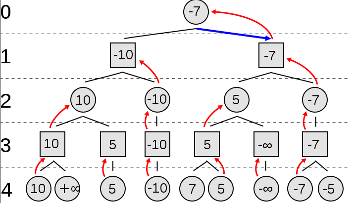
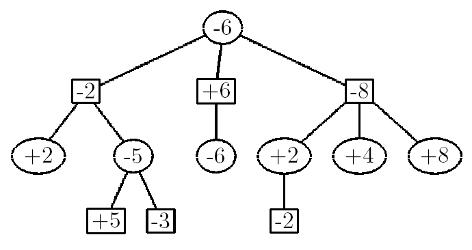
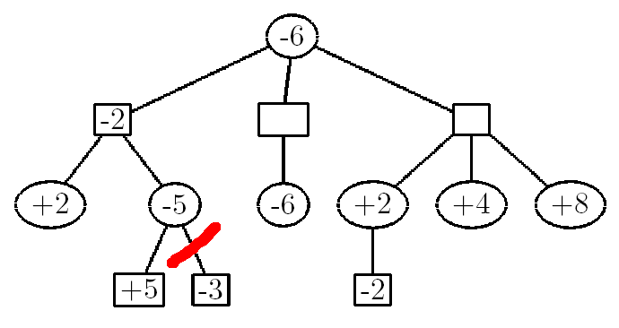
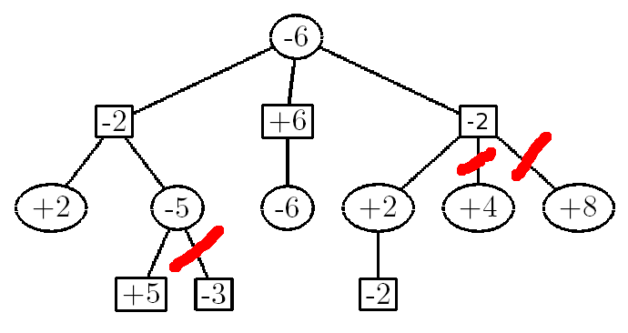

Othello AI
Software Design Final Project
Project maintained by Casey Alvarado, Pratool Gadtaula, and Jay Woo
Project Design
We had decided on a game, Go, that required orders of magnitude more computation than chess when relying on the computer to decide on a move. In order to work out an algorithm, we needed to either completely separate the algorithm from the game or try the algorithm on simpler games.
If we had completely separated the AI algorithms from a game implementation, the algorithm would be easier to analyze on an abstract level. Going from pseudo-code to Python would also be more intuitive. However, it would require a lot of scaffolding in code in order to test.
If we use the same AI algorithms, but on simpler games, such as Tic-Tac-Toe, the testing scaffold would be built. However, difficulty arises when integrating an algorithm with previously written code and adapting an algorithm to the rules of specific games.
In the end, we decided to be more goal oriented and decided to try the AI algorithms on simpler games, including Tic-Tac-Toe and Othello, and move up to a Go implementation, since making a useable AI aligned more with our learning goals. This required a redesigning of our project proposal so that our minimum deliverable, a working AI for Go, would not be our barely tangible final deliverable.
We decided to split the work amongst ourselves. Each team member researched AI algorithms that interested us in an effort to learn about and implement the algorithm. Amongst all three of us, we are exploring and applying Markov Chains, Monte Carlo Tree Searches, Rapid Action Value Estimator (RAVE), David Rutland Methods, Neural Networks, and Genetic Algorithms. Once we have working implementations of each algorithm on different games, we will teach each other our algorithms and perhaps play our AIs against each other.
Instead of implementing the methods we were exploring from before (Markov Chains, Monte Carlo Tree Searches, etc.), we stuck with using MiniMax, a basic algorithm that uses the best possible opponent's move to determine the best move possible for the computer by minimizing the opponent's maximum value. After successfully incorporating this idea inefficiently but conceptually accurately in Tic-Tac-Toe, we moved on to a more efficient calculating in Othello. In Othello, the “value” of the board, with respect to the computer, is calculated by multiplying each of the pieces by the effectiveness of their current position. This effectiveness is a weight given to a certain tile on the board. This mimics the Roxanne method of laying out an Othello board, according to page 15 of this dissertation. The board is laid out with priorities set below:

The weights assigned to each space is the difference between 6 and the priority number. This was done so that the factor that each player's piece is multiplied by could be used directly to calculate the score. For instance, the corners were assigned a value of 5, the most weight, since they have the highest priority.
We used pseudo-code that we had found here to help us understand a version of Mihelp us understand a version of MiniMax called NegaMax that effectively returns the same result as MiniMax, but maximizes the negation of the opponent's score.
After numerous hard-to-find bugs in our code, we were able to successfully implement MiniMax. Currently MiniMax works effectively up to four plies, or four turns, ahead. It takes a bit of time to compute, but not enough that the computer hangs or that the human player becomes bored. However, even more plies can be reached by implementing alpha-beta pruning.
Essentially, alpha-beta pruning reduces the number of branches that the computer searches through by eliminating the ones that definitely will not yield good results. By eliminating these branches, greater depths can be reached because the number of branches at each depth decreases significantly.
MiniMax and NegaMax
As we developed code for our Othello AI, we discovered that it would be relatively easy to implement NegaMax, which is essentially a different way of representing the MiniMax function. NegaMax simplifies the issue of alternating between finding the branch with the lowest score (for the opponent) and finding the branch with the highest score (for the player), by first picking the branch with the highest value and negating that number.
As shown in this diagram, MiniMax recurses through each node by first calculating the heuristic values at the very bottom of the tree. Then those values propagate upwards, such that the square nodes pick the smallest value while the circular nodes pick the largest value. This requires a big 'if-else' statement in which the if block looks extremely similar to the else block. Rather than having such repetitive code, we combined the if and else blocks together. This also meant that at each depth, we had to negate each value, as shown below. This is how the NegaMax function works:
Each node will always seek the value that is the highest and then negates it for each higher depth.
Alpha-Beta Pruning
Alpha-Beta pruning requires two variables - alpha is the highest possible value along a branch that a player can have and beta is the highest possible value along a branch that a computer can have. The gist is that the program will skip certain branches if it realizes that it is impossible to find a better branch. Consider the following example:
In the first node, the NegaMax function reads all of the branches under the value -2. It sees a +2 and stores that number in a variable called alpha (or beta - it doesn't matter). If the +2 had more branches underneath it, the recursive function would have went deeper until all the necessary branches have been analyzed. It then propagates that alpha value upwards to the -2 node and the function stores that value as beta. Then, it looks at the next branch. It sees the value +5, negates it, and stores that number (-5) into alpha. By the definition of the NegaMax function, each node picks the greatest value and then negates it, so at this point, we know that the greatest value will be at least +5. We see that alpha (-5) is less than beta (-2), so we can break the loop and ignore the -3 value, which has no effect on the outcome.
Next, we look at the -2 node at the far right. using this same process, we see that one of the branches is +2. When it gets negated, it turns into a -2. This is less than the +6 branch that's in the middle, and even if the +2 branch were a +10 branch or a +100000 branch, it won't change the outcome of the function - the +6 branch will get chosen no matter what. As a result, the +4 and the +8 branches get pruned.
As it turns out, pruning has an exponential effect on the NegaMax function. We had two AI's play against each other without pruning, and the program ran for a total of 18 minutes and 15 seconds. With pruning, however, the runtime dropped significantly to 2 minutes and 27 seconds. The end result was also exactly the same.
For a more detailed and less rambling description of alpha-beta pruning, this video serves as a very useful lecture (it's the one that we used to learn alpha-beta pruning). Link. This is slightly different since it describes alpha-beta pruning with a MiniMax function instead of a NegaMax function. Nonetheless, it's really useful!
Data Structures
When saving the information that is passed up from the base case nodes, we want to save the board location that the branch is correlated to and the alpha or beta value. Therefore, by the necessity of our algorithm, recursion with a tuple was simplest. The first value of the tuple contains a tuple with a board position and the second value would be the alpha or beta value.
The board is stored as a nested list with values of -1, 0, or 1. A -1 indicates that the board space is occupied by a white piece, 1 indicates a black piece, and 0 indicates an empty board space.